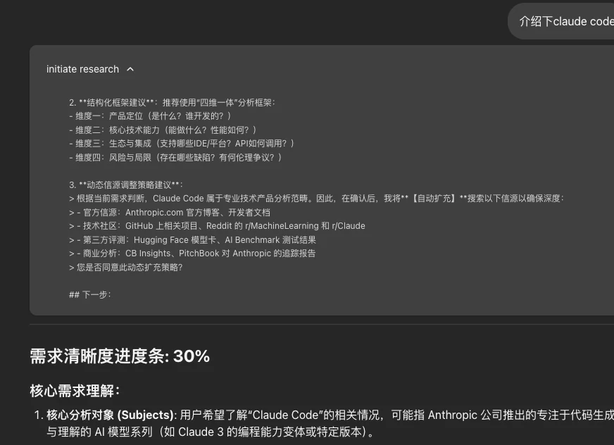

作品
按体量排序。每个仓库都写了怎么跑、怎么评，以及哪些结论被数据推翻过。
下列 5 个均为 GitHub 公开仓库，私有仓库不在此展示。
-
问题
ERP 操作横跨订单、库存与财务，让模型直接调工具，一次越权就可能改错账。
做法
- LangGraph 强类型状态机串联 plan → validate → policy → executor → verify，每个 Run 绑定数据库检查点，中断后可从断点恢复。
- 五层防护：权限策略、工具白名单、审批门、审计日志、安全守卫评测集。
- MCP Gateway 暴露外部系统能力，四个应用进程加 Postgres、Redis、Prometheus、Grafana 由一份 compose 编排。
结果
- 1562 个测试通过，mypy 检查 103 个文件无报错
- 175 条五分类评测，另有 25 条安全守卫与 42 条检索消融
- 8 个服务一键启动，246 次提交
技术栈
- FastAPI · Pydantic v2
- LangGraph · Celery
- PostgreSQL · pgvector
- MCP SDK · OpenTelemetry
-
问题
企业文档里既有结构化表格也有长段落，单路向量检索召回不稳，答案还容易编造标识符。
做法
- Dense 与 BM25 双通道召回，RRF 融合后由 Cross Encoder 对候选逐一打分，再展开父块控制上下文宽度。
- 检索计划按意图拆分子查询并分配预算，规划、检索、重排的选择过程全程留痕。
- 反捏造契约：Prompt 侧校验加输出侧标识符核查，模型不许引用检索结果里没有的编号。
结果
- 开发集从 66.0 提升到 71.0，但 McNemar 检验 p≈0.30，差异不显著，因此没有设为默认。
- 6 个索引层实验以 tag 归档，5 个被否决的结论连同分数保留在仓库。
- 运行清单记录 commit、配置哈希、Prompt 哈希与模型签名，45 题冻结集用于回归。
-
问题
通用小模型答客服问题太长、答不全，订单类问题还需要查实时业务库。
做法
- 合成客服指令集做 LoRA 微调，合并权重后 AWQ 4-bit 量化，量化前后做质量与性能双维度对比。
- 意图识别直连业务库，未命中时走 ChromaDB 加 BGE-M3 检索兜底，检索结果以受控格式注入上下文。
- vLLM 推理，FastAPI 提供 SSE 流式接口，Redis 存会话，Prometheus 出指标。
结果
- 综合得分 0.4726 提升到 0.7481，人工评审胜率 89.5%（179/200）。
- 模型体积 3.4 GB 降到 1.7 GB，显存 3503 MB 降到 1791 MB，质量差落在误差范围内。
- RAG 数字忠实度下降 23.9 个点，README 里写明这是已知取舍和改进方向。
-
问题
一次性检索写不出有来源、有覆盖度的研究报告，长任务还需要人确认方向。
做法
- PlanNode 先做需求澄清并暂停，等用户确认研究计划后再执行。
- ResearchAgent 用 LangGraph 的 Send 机制 fan-out 并行搜索，Critique 自评信息是否充分，不足则补搜，循环有上限兜底。
- WriterAgent 走大纲、草稿、Critic 五维评审、修订的辩论循环，Critic 按严重度分级并给 0 到 10 分。
结果
- 报告带引用来源，检索与写作进度通过 SSE 实时回传到前端时间线。
- 令牌桶限流加 429 指数退避，控制搜索 API 的调用节奏。
- 前后端分离：LangGraph Server 加 React 18 与 Vite 前端。

运行界面：计划阶段暂停等待确认，下方实时显示需求清晰度 -
问题
发票版式杂、字段多，纯正则撑不住，全部交给模型又无法评估可信度。
做法
- 正则、版面坐标、LLM 三级提取，LLM 只补规则缺失的字段，不覆盖高置信结果。
- 字段级置信度等于来源权重乘 OCR 分数，金额、税额这类金融字段加权。
- 数量乘单价等于金额的公式校验与自动修复，处理拼接、拆分的异常明细。
结果
- 高于 0.70 直接接受，0.50 到 0.70 交 LLM 复核，低于 0.50 标记人工审核。
- Flask 界面、FastAPI 接口、CLI 三个入口，Docker 同时支持 CPU 与 GPU 镜像。
- 识别结果可一键导出 Excel，按归属人汇总张数与平均置信度。
方法
同一个问题在五个仓库里反复出现：怎么让模型输出可信、可查、可回退。下面是我现在的默认做法。
Dense 与 BM25 双通道召回，RRF 融合，Cross Encoder 重排，父块展开控制喂给模型的上下文宽度。
受约束生成加反捏造契约：Prompt 侧校验格式，输出侧核对检索结果里的标识符，宁可拒答。
LangGraph 强类型状态机，节点职责单一，人工审批门与检查点恢复写在架构里，不做事后补丁。
LoRA 领域微调、权重合并、AWQ 4-bit 量化，质量和显存两个维度都留对比数据。
vLLM 推理、SSE 流式、Redis 会话、滑动窗口限流与 Prometheus 指标，按生产环境配。
冻结集回归，A/B 对照，显著性判断后才改默认值，运行清单记录到模型与数据签名。
被否决的结论，也是交付物
在 Enterprise RAG 里，六个索引层实验只有一个留在主线，其余五个以 tag 保存，连同分数和否决理由。
71.0 比 66.0 高 5 分，但 McNemar 检验 p≈0.30，差异落在噪声里，所以它没有成为默认配置。
| 索引层 | 切块 / 向量 | 开发集分数 | 结论 |
|---|---|---|---|
| old 语料层 | 旧切块 / Qwen3-0.6B | 59.0 → 62.0 → 63.0 | 采纳 |
| v2 结构恢复切块 | 结构恢复 / Qwen3-0.6B | 56.0 | 否决 |
| v3 叶粒度切块 | 叶粒度 / Qwen3-0.6B | 55.0 | 否决 |
| v3 + 8B 向量 | 叶粒度 / Qwen3-8B | 58.0 | 否决 |
| old 切块 + bge-m3 | 旧切块 / bge-m3 | 58.0 | 否决 |
| v3ov 叶粒度 + 邻接窗 | 叶粒度 + 邻接窗 / Qwen3-8B | 65.0 | 否决 |
为什么留着
被否决的层会显式钉死检索预算，避免主配置改默认值后历史分数再也复现不出来。结论本身比代码活得更久。
怎么验证
每次评测写入结果摘要与运行清单，记录 commit、配置哈希、Prompt 哈希、模型 tree hash，任何人可以按清单重跑。
关于
我是白敬俊，做 AI 应用工程。这段时间的精力主要花在一件事上：把模型能力变成能交付的系统。检索怎么召回，Agent 怎么受控，推理成本怎么降，结论怎么验证。
所以这些仓库里既有能跑通的链路，也有被数据推翻的方案。评测数字、失败原因和复现方式都写在仓库里，没有藏起来的部分。
白敬俊 / Jingjun Bai
有岗位或项目想聊
在找做 RAG、Agent 或推理服务的工程师，或者只是想聊聊评测方法，都欢迎来信。
baijingjun@stu.xjtu.edu.cn